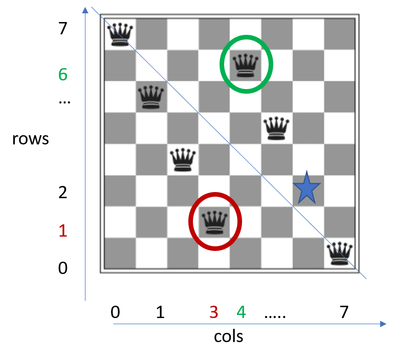
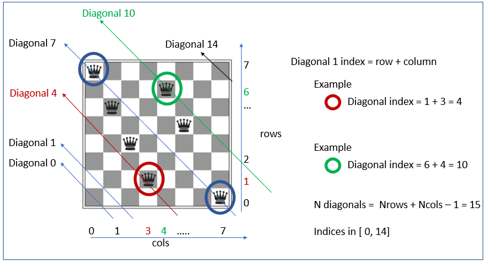
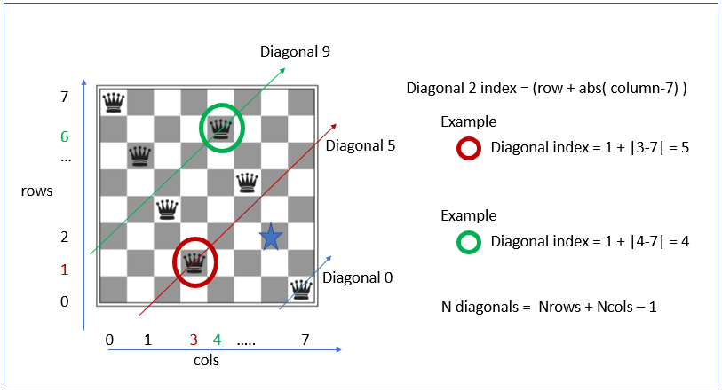

This is taken from chapter 3 in the book of Russel & Norvig
It is not a complicated problem but I decided to look at it
for several reasons. One is that it is mentioned in the book several times.
Another reason, because it seriously indicates the importance of defining and
computing a reasonable cost function. Finally, because
ONE character in the code, makes a HUGE difference.
ONE chracter, that ultimately has to do with Lateral displacements in the
context of hill-climbing algorithms. I found that very surprising and thats the main
reason I decided to document this example.
The problem
Eight queens occupy a chess board. There is one queen per column and only one.
The task is to distribute the queens in different rows, so they o not attack each other.
An example is shown in the figure below.

Figure 1. Eight queens, one per column. The task is to distribute them
in rows so they dont attack each other. Queens attackt each other if they share a row
or a diagonal. One queen is missing in column 6.
If places in the 2nd row, it wouldnt be attacked. Two queens are
attacking each other along the diagonal line shown
In the figure, two queens are highlighted. One is in colum 3 and row 1
and the other is in column 4 and row 6. Note that if the missing queen
is placed in the second row of column 6, it wouldnt attack any other
queen. Yet, this is not an acceptable solution because two queens
attacke each other along a diagonal as shown in the figure. Two queens
would attack each other if they are in the same row or the same diagonal.
The state
All the queens are differentiable.We have queen 0,1,2...etc. These are
the pieces in columns 0,1,2,3..etc. The state is defined as the row
of each queen. Namely, it is a set of eight integers, one per queen. Each
integer value is constrained in the range [0,7]. This can be represented
as a 8-component vector:
\[s = \{{
x_1,x_2,....x_{n-1}, x_n}\}\]
In the example shown in Figure 1. the state would be:
\[s = \{7,5,3,1,6,4,2,0\}\]
Transitions
For a given state \(s_t\), the queen 0 has 8 choices. It can stay put, or it can move effectively
to seven different squares. For the second queen, the options are the same regardless of the location
of any other queen. Hence we have a total of:
\[N = 8^8 -8 = 16 777 208 \]
states that are reachable from any other state. We substract 8 in the formula above to acocut for the fact that if
ALL the queens stay put, there is not a transition of states.
This is a large number of states, if we scan them by randomly moving queens until a solution is found,
it may take a long time. There may be a better strategy.
Hill-climbing algorithm
The Hill-climbing algorith aims at scaning the state-space in a way slightly better than just at random.
Basically, a state is chosen at ramdon form all available. If the the state is closer to a solution than before,
the transiotion is accepted and rejected otherwise. The algorithm may get stuck in configurations for which
after several trials is not found a acceptable transition.
Cost function
An acceptable transition is one that takes the configuration from a state to another stage with the condition
that the final state is closer to a solution. The closeness is evaluated via a cost function.
Following the advise of Russel & Norvig, the cost function will be taken as the
total count of pairs of queens attacking each other. In figure 1, the cost of the state would be 1.
The aim is to find a state with an associated cost of zero.
Queens in the same row
If two queens are in a row, there is one pair of them atacking each other. If three queens are in
a row, thenthere are 2 pairs. In general, the number is the number of ways we can pick 2 out of N
queens in the same row. Namely:
\[Cost( N, i ) = \frac{N_i!}{(N_i-2)!2!} \]
is the const of having N_i queens in the same row i. We need to add the cost of all rows:
\[C_{rows} = \sum_i \frac{N_i!}{(N_i-2)!2!} \]
This is easily computed. The python code could be as:
from collections import Counter
import math
import random
import time
random.seed( 132454 )
NCOLS = 8
NROWS = 8
def cost(state):
#number of pairs of queens under attact due to same-row occupancy
c= Counter(state) #count of the queens in each row
for n in range( len(state) ):
sum_rows = sum([ math.factorial(c[n])/( math.factorial(c[n]-2)*2 ) if c[n]>=2 else 0 for n in range(len(state)) ])
return sum_rows
Queens in the same diagonal
This is trickier and it is key to be able to compute this cost quickly, since it
may be the case that we need to compute it many times.
Note, however,that we can enumerate the rows as in the figure 2, below.
The top-left pointing diagonal, denoted as \(D1_k(i)\), that each queen i belongs to, is exactly the sum of
its row index and column index:
\[D_k(i) index = row_i + col_i \]

Figure 2. Two queens belong to the same top-left-pointing diagonal if the sum of their
row index and column index is the same. The highlighted queen inside the red circle
is in column = 3 and row = 1, i.e. diagonal = 4. The one inside the green circle is
in diagonal = 10, because its column index = 6 and its ow index = 4.
Why is this convenient? well,because the same code used before can be reused now. Basically,
we just need to construct a vector for the state but instead of filling it with the row index,
we fill it with the diagonal index.
The other diaginal direction is just the same, just that we need to start counting the columns from the right
hand side of the board. This is:
\[D2_k(i) = row_i + |col_i - NCOLS - 1| \]

Figure 3. Top-right-pointing diagonals.
Implementation of cost calculations
#returns the number of "pairs" of attacked queens
def cost(state):
#number of pairs of queens under attact due to same-row occupancy
c= Counter(state) #count of the queens in each row
for n in range( len(state) ):
sum_rows = sum([ math.factorial(c[n])/( math.factorial(c[n]-2)*2 ) if c[n]>=2 else 0 for n in range(len(state)) ])
diagonal1 = len(state)*[0]
diagonal2 = len(state)*[0]
#each queen belongs to two diagonals. One pointing to the right and another one pointing left (see picture)
diagonal1_occupancy = [0]*( len(state) )
diagonal2_occupancy = [0]*( len(state) )
for queen_index in range( len(state) ):
col = queen_index
row = state[col]
d1 = row + col
d2 = (NROWS + NCOLS -1 ) + ( row + (NCOLS-1) -col )
diagonal1_occupancy[ queen_index ] = d1
diagonal2_occupancy[ queen_index ] = d2
#now it is the same as in the case of same-row occupancy
c= Counter(diagonal1_occupancy) #count of the queens in the same right-poinint diagonal
sum_d1 = 0
for n in range( NROWS + NCOLS -1 ):
sum_d1 = sum_d1 + ( math.factorial(c[n])/( math.factorial(c[n]-2)*2 ) if c[n]>=2 else 0)
c= Counter(diagonal2_occupancy) #count of the queens in the same left-poinint diagonal
sum_d2 = 0
for n1 in range( NROWS + NCOLS -1 ):
n = n1 + (NROWS + NCOLS -1 )
sum_d2 = sum_d2 + (math.factorial(c[n])/( math.factorial(c[n]-2)*2 ) if c[n]>=2 else 0 )
return sum_rows + sum_d1 + sum_d2
This is less than 30 lines of code if we remove the comments.
Implementation of the hillclimbing algorithm
The missing part if the search algorithm, which is quoted below.